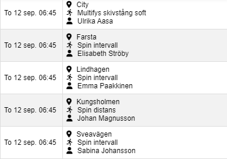

Användarmanual
Inledning
Denna applikation hjälper dig att filtrera gymaktiviteter baserat på plats, aktiviteter och instruktörer. I denna manual kommer vi att gå igenom hur du navigerar och använder webappen effektivt.
Navigering
Översikt
Webappen består av tre huvudsakliga delar:
- Menyraden - Överst finns två ikoner: en informationsikon till vänster för att komma till denna manual, och en filterikon till höger för att ställa in filter för gymaktiviteter.
- Filterknappar - Nedanför menyraden hittar du en uppsättning av runda knappar som representerar filteralternativ (plats, aktivitet och instruktör).
- Aktivitetstabell - Under filterknapparna finns en tabell som listar gymaktiviteter baserat på de valda filtren.
Menyraden
Informationsikon (till vänster) - Genom att klicka på denna ikon kommer du till
användarmanualen. Det är en informationsikon som ser ut som en cirkel med ett "i"
inuti.
Filterikon (till höger) - Denna ikon öppnar filtret där du kan välja gym, aktiviteter eller
instruktörer. Ikonen är formad som en filtertratt.
Filtrera Aktiviteter
Knapparna för att ställa in filter: Det finns nio runda knappar som låter dig välja plats, aktivitet och instruktör:
- Platsfilter: Knappar märkta med en platsikon (pin-ikon) låter dig välja vilket gym du vill se aktiviteter från.
- Aktivitetsfilter: Knappar med en löparikon representerar olika gymaktiviteter (t.ex. löpning, yoga).
- Instruktörsfilter: Knappar med en personikon låter dig välja specifika instruktörer.
Så här använder du filtren:
Klicka på en knapp för att aktivera eller avaktivera ett filter. När knappen är röd,
betyder det att filtret är aktivt. Du kan kombinera flera filter för att finjustera sökresultaten.
Visa Aktiviteter
Efter att du har valt dina filter visas resultaten i en tabell under knapparna. Tabellen visar följande information:
- Datum och tid för aktiviteten.
- Plats där aktiviteten hålls.
- Typ av aktivitet (t.ex. yoga, spinning).
- Instruktör som leder aktiviteten.
Tabellen uppdateras automatiskt när du ändrar dina filter.
Vanliga frågor (FAQ)
Varför finns inte min favoritinstruktör med i instruktörslistan?
Instruktörslistan utgår från dom aktiviteter som finns två veckor fram i tiden. Ej tidigare selekterade instruktörer som inte har någon aktivitet kommer därför inte att vara valbara.
Hur filtrerar jag aktiviteter?
Använd de runda knapparna för att välja en eller flera av plats, aktivitet och instruktör. Filtren tillämpas i kombination direkt när du klickar på en knapp.
Varför visas inga aktiviteter?
Om inga aktiviter stämmer in på de sammanlagda kriterier de aktiverade knapparna definierar kommmer inga aktiviter att visas.
Hur återställer jag filtren?
Klicka igen på en röd knapp för att avaktivera det specifika filtret.
Hur navigerar jag tillbaka till huvudsidan?
Använd pilikonen längst upp till vänster på alla sidor för att navigera tillbaka till huvudsidan.
Avslutning
Webappen är utformad för att göra det enkelt att filtrera och hitta gymaktiviteter som passar dina preferenser. Om du har några frågor eller problem kan du alltid återkomma till denna manual genom att klicka på informationsikonen i menyn.
För mer information om koden, besök gärna Github-repot: https://github.com/urban-eriksson/isabelle
Denna app är utvecklad av Urban Eriksson. Om du har frågor eller behöver komma i kontakt med mig, skicka ett e-postmeddelande till: molluscuous@gmail.com.